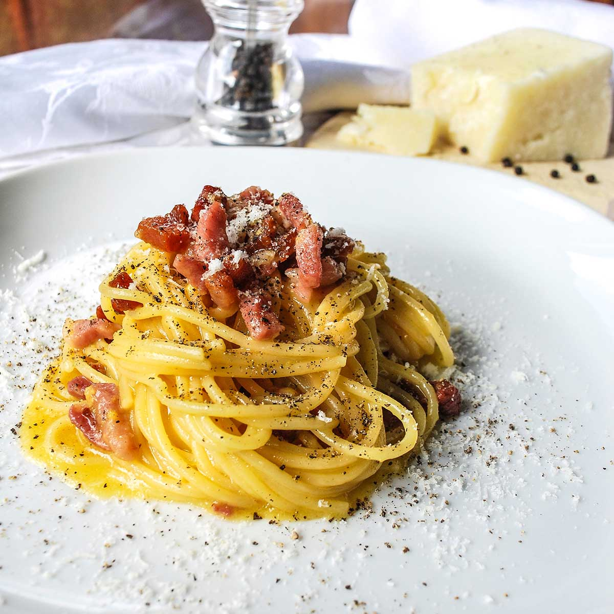

Home
Carbonara

A Yummy and Delicious Carbonara
Carbonara is a classic Italian pasta dish from Rome featuring a rich, creamy sauce made from eggs, hard cheese, cured pork, and black pepper. The creamy texture is achieved by tossing hot pasta with the egg and cheese mixture off the heat, which gently cooks the eggs without scrambling them. This simple yet elegant dish relies on the quality of its few, but essential, ingredients to create a perfect and satisfying meal.
Ingredients
- Spaghetti (or other long pasta like bucatini)
- Guanciale (or pancetta, or thick-cut bacon)
- Eggs (whole eggs and/or egg yolks)
- Pecorino Romano cheese (finely grated)
- Black pepper (freshly ground)
- Salt (for pasta water)
Steps
- Bring a large pot of generously salted water to a boil.
- While the water heats, cut the guanciale into small cubes and cook it in a dry skillet over medium heat until it is golden brown and crispy.
- Remove the crispy guanciale from the pan and set it aside, but leave the rendered fat in the skillet.
- In a bowl, whisk together the eggs, grated Pecorino Romano cheese, and a generous amount of freshly ground black pepper until smooth.
- Cook the spaghetti in the boiling water until al dente, reserving about a cup of the starchy pasta water before draining.
- Add the hot, drained pasta directly to the skillet with the reserved fat and toss to coat.
- Take the pan off the heat and immediately pour the egg and cheese mixture over the pasta, tossing quickly and continuously with tongs.
- Add some of the reserved pasta water, a little at a time, to create a smooth, creamy sauce.
- Stir in the crispy guanciale, and serve immediately with extra cheese and black pepper.